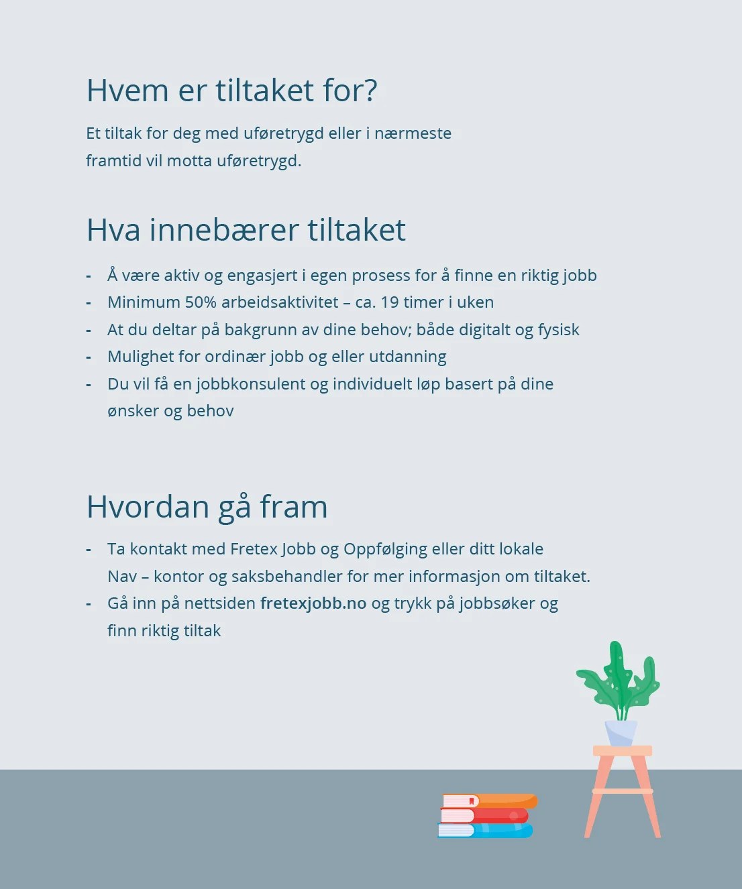

Det er mange årsaker til at mennesker faller utenfor arbeidslivet. Formålet med tilrettelagt arbeid (TA) er å bistå deg med å finne din plass i arbeidslivet. Vi tror på at vi vokser og utvikler oss om vi får jobbe med noe vi selv er motivert for og har ressurser til. Vår jobb er å matche dine egenskaper med riktig arbeidsgiver.
Har du uføretrygd, men likevel et ønske om å være i arbeid eller utdanning? Vi i Fretex Jobb bistår deg på veien mot din drømmejobb eller utdanning.
På veien mot jobb vil en jobbkonsulent bistå deg med å kartlegge ressursene dine, og å se på de behovene du har for tilrettelegging som kan gi mestring og muligheter i arbeidslivet. Vi bruker også god tid på å kartlegge arbeidsgivere, slik at du kan få muligheten til å teste ut ulike jobber.
Du er den viktigste brikken på veien – egeninnsats og vilje til å utfordre deg selv er det viktigste bidraget mot jobb. Hva er din drømmejobb?
